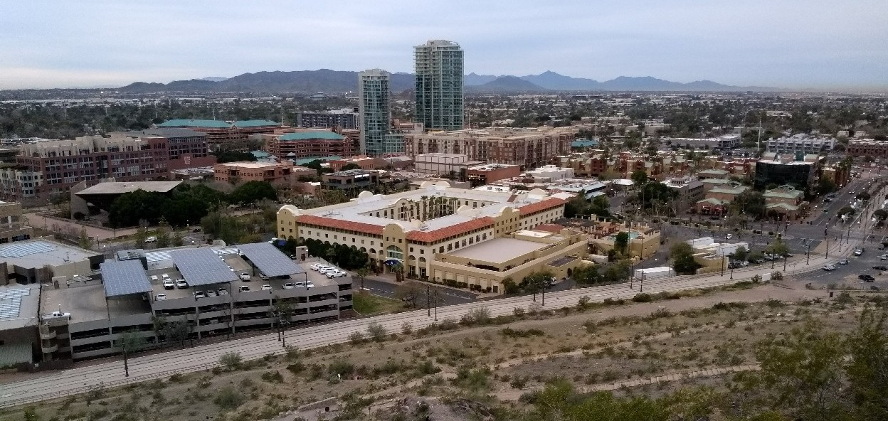
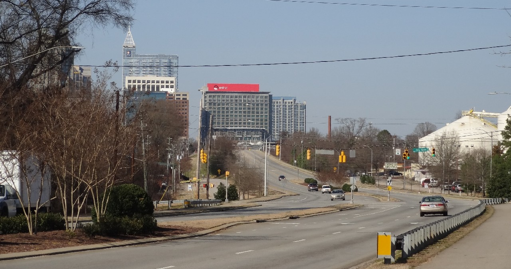
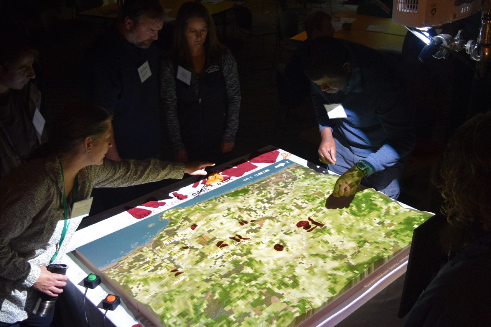

Research and Education at
North Carolina State University
Center for Geospatial Analytics
Vaclav Petras
NCSU GeoForAll Lab and Landscape Dynamics Group
Prague, December 5, 2019
Václav Petráš
- BS & MS in Geoinformatics, ČVUT/CTU (2011, 2013)
- PhD in Geospatial Analytics, NCSU (2018)
- Geospatial Research Software Engineer, NCSU

North Carolina State University
- Raleigh, North Carolina, USA
- NC State
- NC State European Center in Prague
Center for Geospatial Analytics
- interdisciplinary research and teaching center
- community of >40 researchers and educators from 20 departments
Urban Systems
Figure: Tempe, Arizona, USA
Urban Systems
Figure: Raleigh, North Carolina, USA
FUTURES
FUTure Urban-Regional Environment Simulation
- Urban growth model
- Implemented in C and Python
- Open source
- Set of GRASS GIS modules
Biological Invasions

Figure: Spotted lanternfly
PoPS
Pest or Pathogen Spread Forecasting Framework
- Forest or agriculture pest spread
- Simulation and related tools
- Implemented in C++, Python, R
- Open source
Tangible Landscape
Tangible user interface for geospatial modeling and analysis
tangible-landscape.github.io
State-wide PFAS Chemical Sampling
- Scheduling and routing software tool to support optimized sampling
- Over 300 sampling sites in North Carolina
GRASS GIS
- Used for network optimization, powering Tangible Landscape, ...
- Developing and extending (e.g., the urbanization model)
- Benefiting and thus also maintaining

PhD and Open Positions
- Ph.D. in Geospatial Analytics
- Fully funded Ph.D. graduate assistantships
- $25,000 yearly salary, benefits, and tuition support
- Fully funded Ph.D. graduate assistantships
- Several postdoctoral and/or staff researcher positions will open soon
Collaboration & Sharing
- FUTURES, PoPS, Tangible Landscape, ... open source
- Contributing to GRASS GIS
- ...
GeoForAll
- Sharing teaching materials, open source geospatial software in research, ...
- Worldwide network of research and teaching labs
- NCSU GeoForAll Lab
- GeoForAll Lab at the Czech Technical University in Prague
- ...

Email: vpetras@ncsu.edu
Twitter: vaclavpetras
GitHub: wenzeslaus
GitLab: vpetras